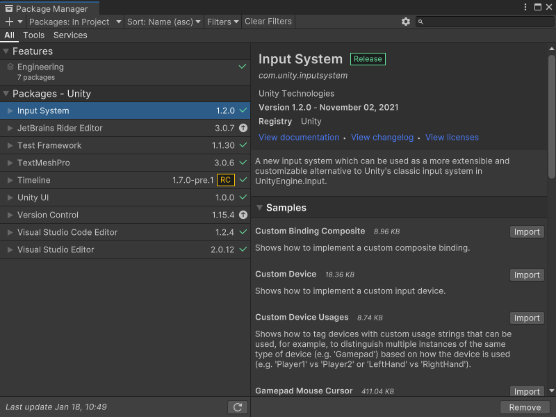
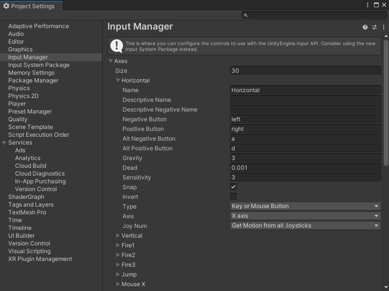

Capture user input in an application¶
You can capture input from a user’s input device to make your application interactive. Visual Scripting can use either the Input Manager or the Input System package to capture input data in a Script Graph.
Use the Input System package¶
The Input System package captures input in Unity applications. It uses any input device and replaces Unity’s Input Manager.
To install the Input System package, see the Installation guide in the Input System package documentation.
To check if the Input System package is installed, go to Window > Package Manager.

For more information on the Package Manager and managing packages in projects, see the Packages section in the Unity User Manual.
Input System package prerequisites¶
To use the Input System package in a project, do the following:
Install the package. For more information, see the Packages section in the User Manual.
Regenerate your Node Library to include the Input System package nodes. For more information, Configure project settings.
In your Player Project Settings, set Active Input Handling to Input System Package (New) or Both. For more information on this setting, see Standalone Player settings in the User Manual.
Create an Input System settings asset. Go to Edit > Project Settings and select Input System Package, then select Create Settings Asset. For more information on the available input settings, see Input Settings in the Input System package documentation.
Create a GameObject with a
PlayerInputcomponent and an Input Actions asset. For more information, see Add and configure a PlayerInput component.
After you’ve configured your project, create a graph to Capture input with the Input System package.
Use the Input Manager¶
The Input Manager is Unity’s built-in system for input.
Change the Input Manager’s settings to change how a project receives input. Go to Edit > Project Settings and select Input Manager.

For more information on the available settings, see the Input Manager documentation in the User Manual.
Input Manager prerequisites¶
To use the Input Manager in a project, in your Player Project Settings, set Active Input Handling to Input Manager (Old) or Both. For more information on this setting, see Standalone Player settings in the User Manual.
After you’ve configured your Player Project Settings, create a graph to Capture input with the Input Manager.